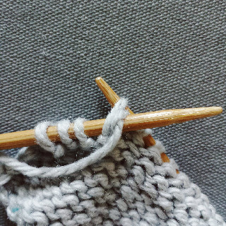

Decreases
All decreases remove one or more stitches from the knitting. Removing a stitch pulls the stitches on either side towards each other, and this will shape the knitting. Decreases serve a practical purpose, but also can be used with increases to create lace and other decorative effects while keeping the total number of stitches the same.
Knit Two Together
This is the most basic decrease, and the one you see most often in patterns. It removes one stitch and slants to the right.
- Insert the right needle tip into the first two stitches on the left needle, from left to right.
- Knit these two stitches as though they were one stitch.
Slip Slip Knit
This decrease is not as common as K2TOG, but it is frequently used when you need the decrease to lean to the left.
- Slip the first two stitches knitwise from the left needle to the right needle. Slip them back onto the left needle, you have essentially changed their orientation on the needle.
- Insert the right needle tip into the first two stitches on the left needle, from right to left.
- Knit these two stitches as though they were one stitch.
Knit Two Together Through the Back Loop
This is a decrease that you will not see as much, but still useful to know. It removes one stitch and slants to the left.
- Insert the right needle tip into the first two stitches on the left needle, from right to left.
- Knit these two stitches as though they were one stitch.
Purl Two Together
Most patterns keep decreases on the right side, but purl decreases are still useful to know. This decrease leans to the right.
- Insert the right needle tip into the first two stitches on the left needle, from right to left.
- Purl these two stitches as though they were one stitch.
Purl Two Together Through the Back Loop (Slip Slip Purl)
This decrease leans to the right.
- 
- Slip the first two stitches knitwise from the left needle to the right needle. Slip them back onto the left needle, you have essentially changed their orientation on the needle.
- Now, take the right needle and from the knit side of the work and insert it through the two needles from left to right.
- Purl these two stitches as though they were one.